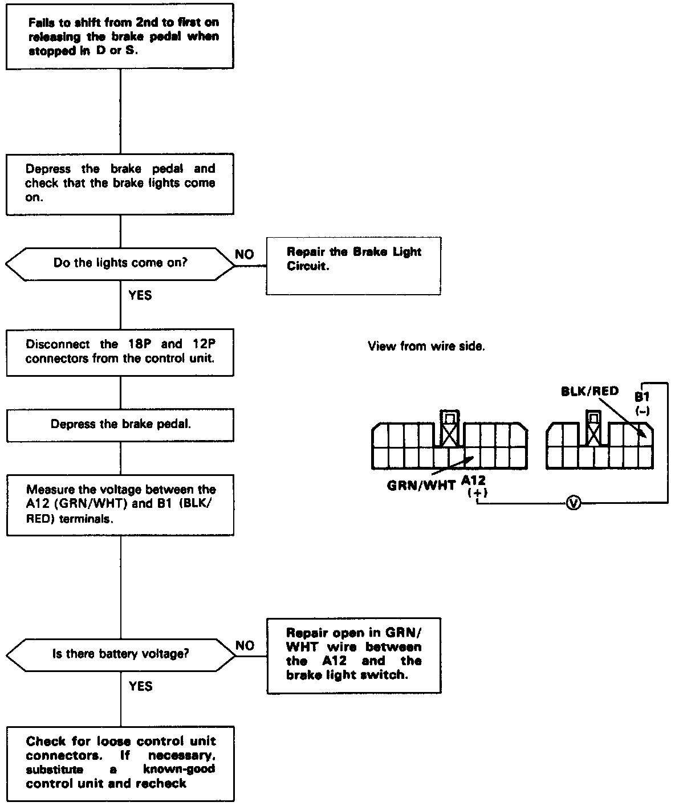

Brake Switch - TCC: Testing and Inspection

Troubleshooting Flowchart
Fails to shift from 2nd to 1st gear after releasing the brake pedal from a stop when in the "S" or "D" position. / Inspection of brake light switch signal.
